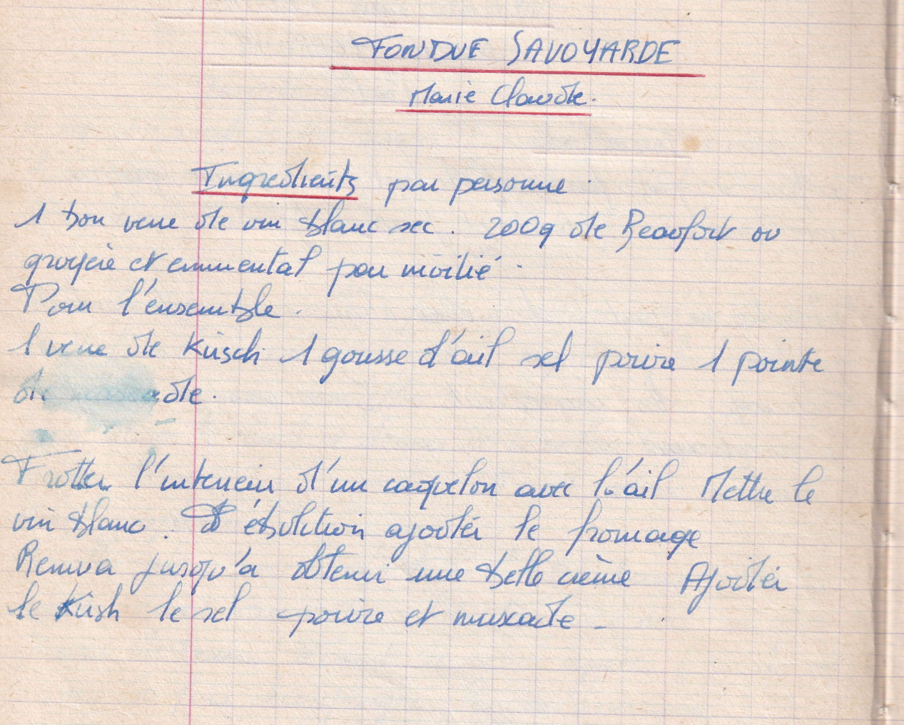

Fondue savoyarde
Marie Claude

LISTE DES INGREDIENTS
- 1 bon verre de vin blanc sec
- 200gr de beaufort ou gruyère et emmental pour moitié pour l'ensemble (??)
- 1 verre de Kirsch
- 1 gousse d'ail
- Sel Poivre
- 1 pointe de muscade
PREPARATION
- Frotter l'intérieur d'un caquelon avec l'ail
- Mettre le vin blanc à ebullition ajouter le fromage
- Remuer jusqu'à obtenir une belle crème
- Ajouter le kirsch, le sel poivre et muscade